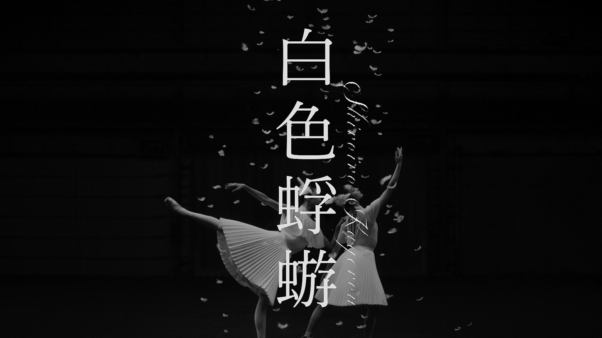
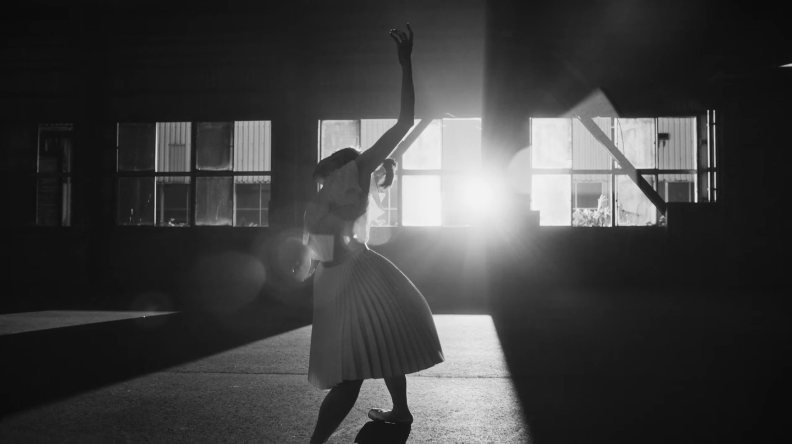
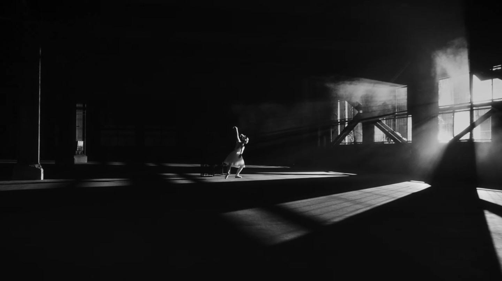
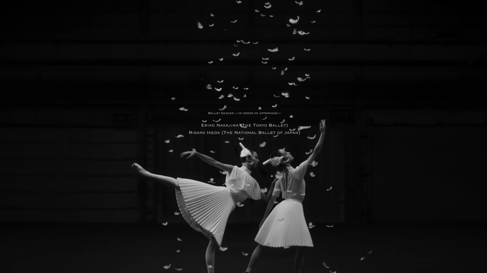
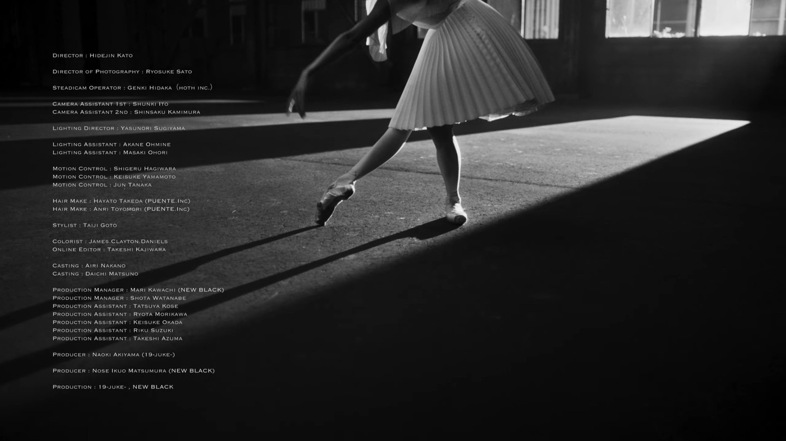

PRODUCTION STAFF
Aimer 23rd Single「白色蜉蝣」Music Video





【PA Work】
Aimer 23rd Single「白色蜉蝣」Music Video
現場制作として携わらせて頂きました。
_______
director：HIDEJIN KATO
director of Photography：Ryosuke Sato
Steadicam Operator：Genki Hidaka（HOTH INC.)
Camera Assistant 1st：Shunki Ito
Camera Assistant 2nd：Shinsaku Kamimura
Lighting Director：Yasunori Sugiyama
Lighting Assistant：Akane Ohmine
Lighting Assistant：Masaki Ohori
Motion Control：Shigeru Hagiwara
Motion Control：Keisuke Yamamoto
Motion Control：Jun Tanaka
Hair Make：Hayato Takeda（PUENTE.INC）
Hair Make：Anri Tyomori（PUENTE.INC）
Stylist：Taiji Goto
Colorist：James.Clayton.Daniels
Online Editor：Takeshi Kajiwara
Casting：Airi Nakano
Casting：Daichi Matsuno
Production Manager：Mari Kawachi（NEW BLACK）
Production Manager：Shota Watanabe
Production Assistant：Tatsuya Kose
Production Assistant：Ryota Morikawa
Production Assistant：Keisuke Okada
Production Assistant：Riku Suzuki
Production Assistant：Takeshi Azuma
Producer：Naoki Akiyama（19-JUKE-）
Producer：Nose Ikuo Matsumura（NEW BLACK）
Production：19-JUKE-,NEW BLACK
---------
「白色蜉蝣」は先行配信中です！
https://Aimer.lnk.to/Resonantia
■12/6(水)発売
Aimer 23rd Single「白色蜉蝣」
予約はこちら
https://aimer.lnk.to/shiroirokagerou
■収録楽曲一覧
1.白色蜉蝣
（作詞：aimerrhythm 作曲：中野領太 編曲：玉井健二、飛内将大）
2.Overdrive
（作詞：aimerrhythm 作曲：福島章嗣 編曲：玉井健二、飛内将大）
3. Sweet Igloo
（作詞：aimerrhythm 作曲：永澤和真 編曲：玉井健二、永澤和真）
4.白色蜉蝣 -TV ver.-
5.白色蜉蝣 -Instrumental-
（All songs produced by 玉井健二）
http://www.aimer-web.jp/